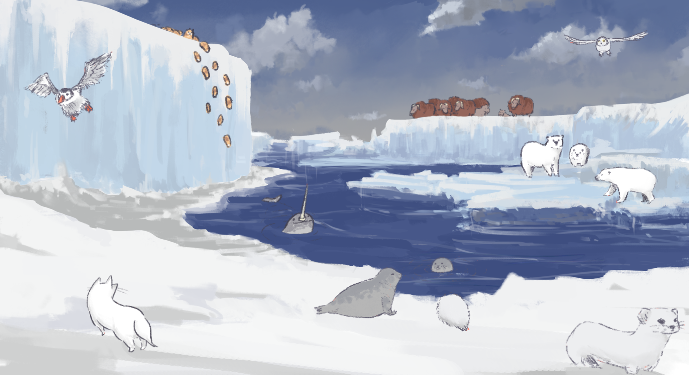
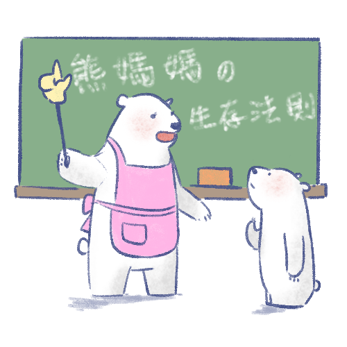
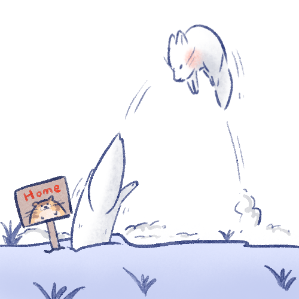
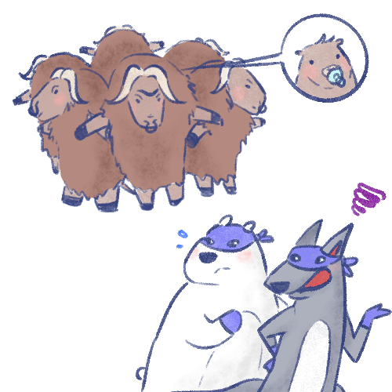
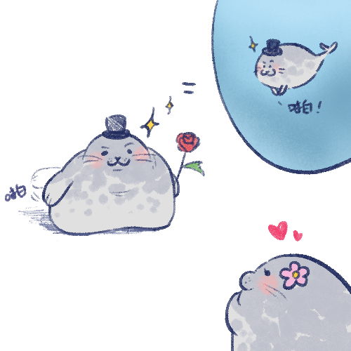
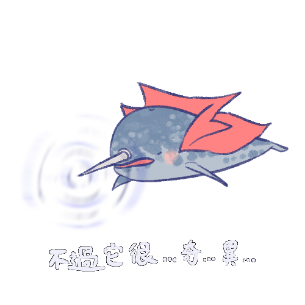
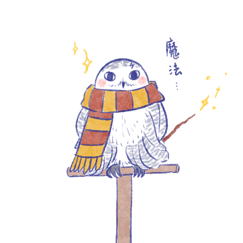
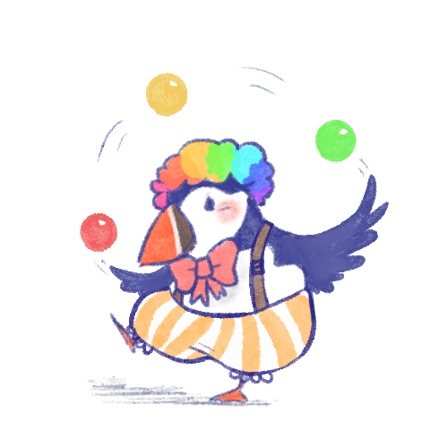
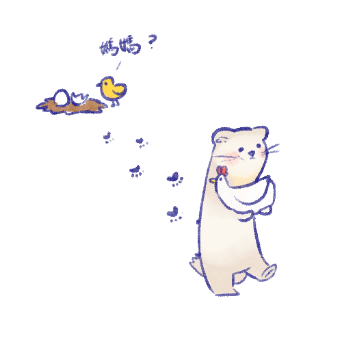

北極不像南極是陸地,北極中央是一片汪洋的大海喔!
我們一般稱北極是一個範圍,稱為「北極圈」
北極圈是為北緯6634'的假想圈,範圍內涵蓋許多不同國家。

| 21,000! | 北極國家知多少! |
|---|---|
| 發現已知物種數量 | 北極圈內的國家包含 瑞典、芬蘭、挪威、丹麥、格陵蘭、美國、加拿大及冰島 |

是指一天24小時之內全都白天(永晝)或黑夜(永夜)。
北極點附近的地方一年有近一半的時間是永晝,另一半是永夜。
靠近北極圈的地方則只有幾天的永晝永夜。

雖然北極看起來一片白茫茫,人跡罕至,
但其實北極孕育達21000已知物種,有許多多彩多姿的生物生存此。
群居的小型鼠，在北極附近活動，特點是繁殖速度極
快且不冬眠，終年可生殖，一年能生7－8次，每次可
生12子；小旅鼠出生後14-30天後便可交配，使族群
數量一年內可增加十倍以上。
旅鼠的自殺的傳說： 傳說當旅鼠數量達到頂峰時，它們就會自發地集體遷移，奔赴大海自殺
只留下少數同類留守並擔當起傳宗接代的神聖任務。

是現存體型最大的熊，也是目前陸地上最大的食肉動物
行動非常靈活，在海裡是游泳健將，在陸上疾走如飛，
嗅覺比獵犬還敏銳，一頓可吃下約20% 體重的食物。
擁有極厚的脂肪及毛髮，且白色的外表最好的保護色，
以在北極這種極端嚴寒的氣候中生存。
但現在牠們因為全球暖化而失去大片海冰棲地，現在正面臨滅絕的危機。
北極熊寶寶所有的生存技能都是由熊媽媽傳授，為了要確認小熊未來可以獨立生活，帶在身邊的
時間少則 2 年半，最長可達 3 年，母子感情十分親密。

譽有「雪中精靈」美稱。牠的毛色會隨著季節與所處
環境而換裝，在冬天時穿上純白的毛皮，助於牠們隱
藏在雪地中；春夏時則會換上漂亮的青灰色外衣。
北極狐的主食是旅鼠，當他發現旅鼠的蹤跡時會像跳水運動員高高跳起壓向旅鼠的巢穴。
北極狐採一夫一妻制，交配後會組成一個家庭，由爸爸負責去找食物，被掠食者攻擊而失去
爸爸的家庭，會轉而投靠其他北極狐家庭。

別名麝香牛，麝牛因雄麝牛在發情時會散發出一種類
似麝香的氣味，故得名。
麝牛是一種介於牛和羊之間的動物，是羚牛的近親，
可以說是一種超大型的野羊。
當狼和熊等敵害出現時，一群麝牛立即形成防禦陣形，成年公牛站在最前沿，而把幼牛圍在中間。
公牛會出其不意地發動進攻，用尖角襲擊對方。

海豹集中於兩極地區，牠們多數時間在海洋裡活動， 遍布整個海域。傳聞因為牠們的臉部長的像豹，從而 取名海豹，全球海豹多達種類12種。 海豹出生時長著一層絨毛保暖，長大後才會換上適合 游泳的剛毛。 海豹在水裡可以拍手，但是在陸地上拍不到手，所以他只能拍自己的身體。 拍手是因為要吸引異性的注意。
亦稱一角鯨，在中世紀以前，因為價值非凡，視為獻 給皇帝或女皇的珍稀寶物。 事實上一角鯨的「獨角」是下巴伸出的左側尖牙， 最長可達 2.7 公尺，重達 10 公斤以上。 雄鯨靠著犄角來吸引大多數沒有獨角的雌鯨注意，爭取交配生子的機會。科學家發現，犄角就 像雷達一樣，具有感測能力，可以接收海裡鹽度、溫度和壓力化，再把訊息傳達至大腦。
是不遷徙的唯一一種鳥類，習慣白天行動，晚上休息， 和大多數夜行性貓頭鷹作息不同，頂多在黃昏後打打 獵。牠的眼球不能動，但頭可以旋轉到 270 度，喜歡 在視野良好的枝頭高處棲息。 牠有雙千里眼，可以觀察到極遠的小物體；也具有順風耳的能力，無論是昏暗的環境、厚重的 冰雪或是茂密的草叢，都可以憑藉聽覺來打獵覓食。 曾擔任電影與小說《哈利波特》當中的信使。
喜歡集體活動，以捕獵魚類為食。 顏色和企鵝十分相似，鳥嘴上的橘紅色非常醒目，也 因此牠們被稱做「海上小丑」，近年因為受到地球氣 候暖化、人為捕獵等因素，而瀕臨絕種的邊緣。 但現在已有專門的保護機構，述兩逐年趨於穩定。
天性喜愛冒險，牠們旺盛的好奇心似乎沒有極限，總 是四處亂鑽亂竄，比貓還愛搗蛋，比狗的好奇心還要 旺盛，極具破壞性，尤其喜愛偷獵家禽。 貂的馴化已有千年的歷史，漸漸被馴養為寵物的貂已不適合野外生活。 家養雪貂通常作為寵物餵養，或被用來驅趕洞穴中的老鼠和兔子。 雪貂一詞常常讓人誤會寵物貂是全白色，其實純白色野生雪貂極為罕見。
海冰的存在，可不單單只是為了北極熊
還可以助於其他的極地動物狩獵、繁殖、遷徙和庇護等
然而，海冰融化所影響的，遠遠不止於極地動物，
海冰相當於在海平面的一面大鏡子，當太陽光照射地球，